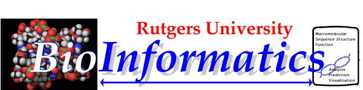

The Coordinated Initiative in BioInformatics at
Rutgers, combining research strengths from areas of computer science,
mathematics, chemistry and biochemistry.
A major component of scientific research involves the development
and testing of hypotheses from large amounts of numerical and visual
data, usually stored in shared databases.
Developing explicit structural representations of the
knowledge needed for hypothesis formation and scientific data analysis
and prediction is central to this work, and forms the core of
research in the nascent field of BioInformatics. It is the emphasis
on the search for systematic, structured representations of knowledge
underlying biological and biochemical problem solving that distinguishes
this approach from other research in biomathematics and computational
biology.
We are fortunate at
Rutgers to have strong collaborative research groups who are already
working together in this interdisciplinary field:
- Dr. Helen Berman, Professor of Chemistry and Director of the
NSF-funded Nucleic Acid Data Base, and the Molecular Biophysics Center;
- Dr. Gaetano Montelione, Associate Professor of Chemistry and
head of the NMR Protein Research Group;
- Dr. Casimir A. Kulikowski, Professor of Computer Science, and
Director of the Laboratory for Computer Science Research and the
NIH-funded Rutgers Knowledge-Based Image Interpretation Project;
- Dr. Israel Gelfand, Distinguished Professor of Mathematics, and McArthur
Fellow, who together with Dr. Alexander Kister is working
on the analysis of immunoglobulin structures.
The initiative is to support collaboration among the
existing groups in BioInformatics and to prepare the groundwork for
obtaining external support for a Coordinated Laboratory of
BioInformatics centered at Rutgers, but with a national and
international network of collaborators.